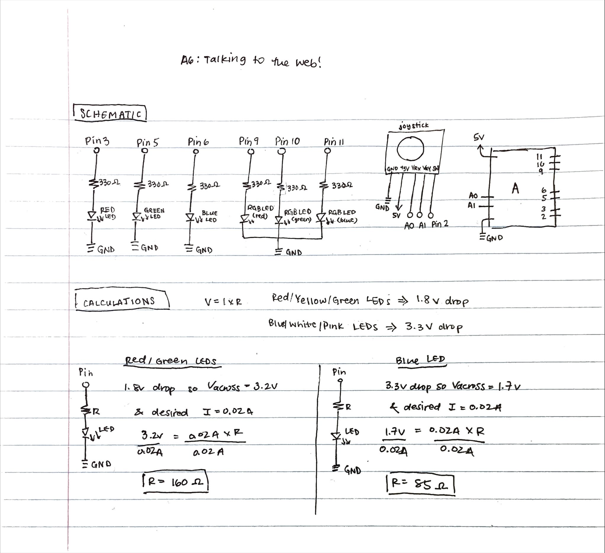
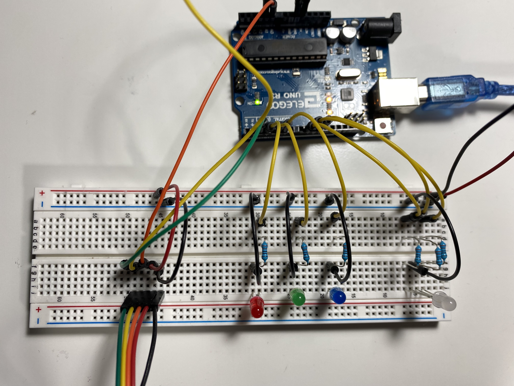
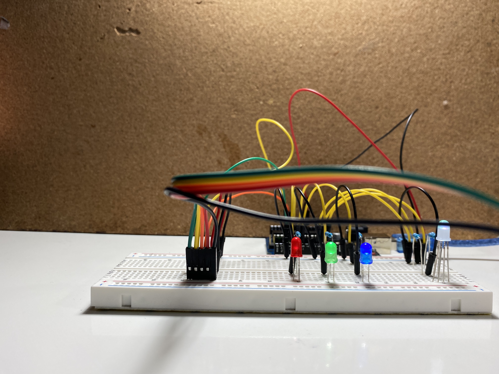

create a schematic for a circuit in which a webpage is creating using p5.js that interacts with the Arduino
implement this circuit using a breadboard
write firmware in Arduino, writing a message to the serial port
the assignment must use:
JSON parsing, Serial, and p5.js
interactive webpage
a minimum of two input devices from the arduino (e.g. the joystick counts as 2 inputs)
a minimum of one output device from the arduino, e.g. an LED
Here is a gif of the joystick/LED 🕹 circuit in action!
For my circuit, I decided to make an interactive game using the joystick. I used the joystick as my input devices, and LEDs as my output devices.
The program works by using the joystick to choose a color for Rudolph's nose. Pressing certain keys on the keyboard change the lights to make them into party lights -> 'p' makes the LEDs fade 10 times, 'b' makes the red, green, and blue LEDs blink 5 times, and space makes the LEDs all turn off.
Schematic
 Schematic and calculations
for my circuit.
Since I was using red, green, and blue LEDs (in the RGB LED) for my circuit, I did two sets of calculations to determine what the appropriate
resistance to use for each LED: one for the red and green LEDs, and another set of calculations for the blue and white LEDs. For red, yellow,
and green LEDs, they all have 1.8V voltage drop, and for blue, pink, and white LEDs, they all have 3.3 voltage drop. The
desired current for all the LEDs I used was 20mA, or 0.02A (found based on the datasheets for the LEDs). When calculating the
appropriate resistance to be used in the circuit, I started with calculating the voltage across. For each of the LEDs, I decided to use 330
Ω resistors to be consistent.
Red and Green LEDs:
Knowing that the Arduino gives 5V, I calculated the voltage across as 3.2V (5V - 1.8V drop = 3.2V across). Using the known voltage across and
the desired current, I then used Ohm's Law with the equation V=IR to get a value R=160Ω for resistance. To ensure
that I did not overload the LEDs and cause them to burn out, I decided to round up and use a 330Ω resistor (shown in schematic
above calculations).
-- Blue LED: Knowing that the Arduino gives 5V, I calculated the voltage across as 1.7V
(5V - 3.3V drop = 1.7V across). Using the known voltage across and the desired current, I then used Ohm's Law with the equation
V=IR to get a value R=90Ω for resistance. To decrease the brightness of the LED, I decided to round up and use a
330Ω resistor (shown in schematic above calculations).
Circuit
For my circuit, I used a joystick, and red, green, blue, and RGB LEDs.
Top View of my Circuit
 Top View of my Circuit (close up)
 Side View of my Circuit
Arduino Code
/* A6: Talking to the web!
* Jocelyn Chen
* Monday 2.28.2022
*
* Program: pick a color for Rudolph's nose using the joystick! Plus added fun to blink and fade LEDs for party time!
*
* This program runs using a joystick, RGB LED, Red LED, Green LED, and Blue LED. This program creates a webpage with
* p5.js that interacts with the Arduino.
*/
int x = A1; // pin for Xvalue of joystick
int y = A0; // pin for Yvalue of joystick
int xval = 0; // starting value for xvalue of joystick
int yval = 0; // starting value for yvalue of joystick
int led_brightness = 10; // starting value for LED brightness
const int leds_pins[] = {3, 5, 6}; // pins for red, green, and blue LEDs (red = pin3, green = pin5, blue = pin6)
const int rgb_led_pin[] = {9, 10, 11}; // pins for the RGB LED ( red = pin9, green = pin10, blue = pin11)
const int num_leds = 3; // number of total LEDs that a user can choose a color from (red, green, or blue)
/// SETUP FUNCTION ///
// the setup function runs once when you press reset or power the
void setup() {
// initialize serial communication at 9600 bits per second
Serial.begin(9600);
// set the timeout for parseInt
Serial.setTimeout(10);
// initialize pins for the red, green, blue, and RGB LEDs as outputs
for (int i = 0; i < num_leds; i++) {
// pins for red, green, and blue LEDs
pinMode(leds_pins[i], OUTPUT);
// pins for RGB LED
pinMode(rgb_led_pin[i], OUTPUT);
}
}
/// LOOP FUNCTION ///
// the loop function runs over and over again forever
void loop() {
/// ARDUINO TO p5 ///
// read in the xvalue of the joystick
xval = analogRead(x);
// read in the yvalue of the joystick
yval = analogRead(y);
// print out the values that were read in to the console in the form [xval, yval]
Serial.print("[");
Serial.print(xval);
Serial.print(",");
Serial.print(yval);
Serial.println("]");
// wait 100 ms
delay(100);
/// WEB to ARDUINO ///
// if there's serial data
if (Serial.available() > 0) {
// read the serial data
int inByte = Serial.read();
// send the serial data back out as raw binary data
Serial.write(inByte);
// blink the red, green, and blue LEDs 10 times in a circuit if 'b' is pressed
if (inByte == 98) { // b pressed
// for 10 times
for (int i = 0; i < 10; i++) {
// for each LED
for (int j = 0; j < num_leds; j++) {
// turn the LED on at brightness value of 10
analogWrite(leds_pins[j], led_brightness);
// wait 200 ms
delay(200);
// turn the LED off
analogWrite(leds_pins[j], 0);
// wait 200 ms
delay(200);
}
}
// turn all LEDs (red, blue, green, and RGB) off if space is pressed
} else if (inByte == 32) { // space pressed
// for each LED
for (int i = 0; i < num_leds; i++) {
// turn off given RGB LED color
analogWrite(rgb_led_pin[i], 0);
// turn off given red, green, or blue LED
analogWrite(leds_pins[i], 0);
}
// fade all LEDs 5 times if 'p' is pressed
} else if (inByte == 112) { // p pressed
// for 5 times
for (int i = 0; i < 5; i++) {
// fade out from min to max in increments of 5 points (with max being 100 and min being 0)
for (int fadeValue = 0 ; fadeValue <= 100; fadeValue += 5) {
// for each LED
for (int j = 0; j < num_leds; j++) {
// set the given RGB LED color to the given fade value
analogWrite(rgb_led_pin[j], fadeValue);
// set the given red, green, or blue LED to given fade value
analogWrite(leds_pins[j], fadeValue);
// wait 20 ms
delay(20);
}
}
// fade out from max to min in increments of 5 points (with max being 100 and min being 0)
for (int fadeValue = 100 ; fadeValue >= 0; fadeValue -= 5) {
// for each LED
for (int j = 0; j < num_leds; j++) {
// set the given RGB LED color to given fade value
analogWrite(rgb_led_pin[j], fadeValue);
// set the given red, green, or blue LED to given fade value
analogWrite(leds_pins[j], fadeValue);
// wait 20 ms
delay(20);
}
}
}
}
}
}
Above is a code snippet of my Arduino code (Arduino talking to the web). For my code, I initialized the pins for the LEDs as OUTPUTs. For the input devices, I used the
joystick, and I used LEDs as the output devices.
View the arduino code
here!
Sketch.js Code
var serial; // variable to hold an instance of the serialport library
var portName = '/dev/tty.usbmodem14101' //rename to the name of your port
var dataarray = []; // data coming in over serial
var datastring = ""; // data read in from serial
var colorpicked = ""; // color picked using joystick
function setup() {
serial = new p5.SerialPort(); // make a new instance of the serialport library
serial.on('list', printList); // set a callback function for the serialport list event
serial.on('connected', serverConnected); // callback for connecting to the server
serial.on('open', portOpen); // callback for the port opening
serial.on('data', serialEvent); // callback for when new data arrives
serial.on('error', serialError); // callback for errors
serial.on('close', portClose); // callback for the port closing
serial.list(); // list the serial ports
serial.open(portName); // open a serial port
createCanvas(1200, 700);
background(0x08, 0x16, 0x40);
}
// get the list of ports:
function printList(portList) {
// portList is an array of serial port names
for (var i = 0; i < portList.length; i++) {
// Display the list the console:
print(i + " " + portList[i]);
}
}
function serverConnected() {
print('connected to server.');
}
function portOpen() {
print('the serial port opened.')
}
function serialError(err) {
print('Something went wrong with the serial port. ' + err);
}
function portClose() {
print('The serial port closed.');
}
function serialEvent() {
if (serial.available()) {
datastring = serial.readLine(); // readin some serial
var newarray;
try {
newarray = JSON.parse(datastring); // can we parse the serial
} catch(err) {
//console.log(err);
}
if (typeof(newarray) == 'object') {
dataarray = newarray;
}
console.log("got back " + datastring);
}
}
function graphData(newData) {
// map the range of the input to the window height and width for x position and y position of joystick:
var yPos = map(newData[1], 0, 1023, height, 0);
var xPos = map(newData[0], 0, 1023, 0, width)
background(0x08, 0x16, 0x40); // background navy
createColors(); // create rectangles for the different colors to choose from (red, blue, green, purple, white)
circle(xPos, yPos, 20, 20); // circle for joystick pointer
// change the circle's color (Rudolph's nose) based on where the joystick pointer is located:
// - change the fill color, then change the circle to the chosen color
// if joystick is pointing at red square -> change circle to red
// if joystick is pointing at blue square -> change circle to blue
// if joystick is pointing at green square -> change circle to green
// if joystick is pointing at pink square -> change circle to pink
// if joystick is pointing at yellow square -> change circle to yellow
// if joystick is pointing at white square -> change circle to white
//
// joystick pointing at red square
if (xPos >= 100 && xPos <= 300 && yPos >= 50 && yPos <= 250) {
fill('red'); // red
circle(605, 355, 20); // circle at (605, 355) with diameter 20
colorpicked = "red"; // red color has been picked
// joystick pointing at blue square
} else if (xPos >= 500 && xPos <= 700 && yPos >= 50 && yPos <= 250) {
fill('blue'); // blue
circle(605, 355, 20); // circle at (605, 355) with diameter 20
colorpicked = "blue"; // blue color has been picked
// joystick pointing at green square
} else if (xPos >= 900 && xPos <= 1100 && yPos >= 50 && yPos <= 250) {
fill('rgb(0, 230, 64)'); // green
circle(605, 355, 20); // circle at (605, 355) with diameter 20
colorpicked = "green"; // green color has been picked
// joystick pointing at pink square
} else if (xPos >= 100 && xPos <= 300&& yPos >= 450 && yPos <= 650) {
fill('rgb(255,0,255)'); // pink
circle(605, 355, 20); // circle at (605, 355) with diameter 20
colorpicked = "pink"; // pink color has been picked
// joystick pointing at yellow square
} else if (xPos >= 500 && xPos <= 700 && yPos >= 450 && yPos <= 650) {
fill('yellow'); // change fill color to yellow
circle(605, 355, 20); // circle at (605, 355) with diameter 20
colorpicked = "yellow"; // yellow color has been picked
// joystick pointing at white square
} else if (xPos >= 900 && xPos <= 1100 && yPos >= 450 && yPos <= 650) {
fill('white'); // change fill color to white
circle(605, 355, 20); // circle at (605, 355) with diameter 20
colorpicked = "white"; // white color has been picked
}
}
// create the squares on the page, setting the color, coordinates, size (220 by 200), and radius 20
function createColors() {
fill('red'); // red
rect(100, 50, 220, 200, 20); // rectangle at (100, 50) of width 220, height 200, radius 20
fill('blue'); // blue
rect(500, 50, 220, 200, 20); // rectangle at (500, 50) of width 220, height 200, radius 20
fill('rgb(0, 230, 64)'); // green
rect(900, 50, 220, 200, 20); // rectangle at (900, 50) of width 220, height 200, radius 20
fill('rgb(255,0,255)'); // pink
rect(100, 450, 220, 200, 20); // rectangle at (100, 450) of width 220, height 200, radius 20
fill('rgb(255,255,51)'); // yellow
rect(500, 450, 220, 200, 20); // rectangle at (500, 450) of width 220, height 200, radius 20
fill('rgb(255, 255, 255)'); // white
rect(900, 450, 220, 200, 20); // rectangle at (900, 450) of width 220, height 200, radius 20
// draw Rudolph using circles, points, and lines
circle(605, 355, 60, 60); // Rudolph's head
strokeWeight(5); // stroke weight change to 5
point(595, 345); // Rudolph's eye
point(615, 345); // Rudolph's eye
line(590, 335, 560, 310); // Rudolph's antler
line(615, 335, 645, 310); // Rudolph's antler
circle(605, 355, 20, 20); // Rudolph's nose
text("Pick a color for Rudolph's nose!", 525, 420); // place text under Rudolph
}
function draw() {
graphData(dataarray);
text("key pressed: " + key, 30, 30); // text showing what key has been pressed
text("color chosen: " + colorpicked, 30, 50); // text showing what color has been chosen
}
function keyPressed() {
//console.log("writing key");
serial.write(key);
}
Above is a code snippet of my Sketch.js code (web talking to Arduino). For my code, when certain keys are pressed on the keyboard, the LEDs either fade, blink, or turn off.
View the sketch.js code
here!
Video of the circuit working - using the joystick to choose a color for Rudolph's nose, pressing 'b' to blink the LEDs, pressing 'p' to fade the LEDs for party lights, and pressing space to turn the LEDs off. *WARNING* Bright flashing lights *WARNING*